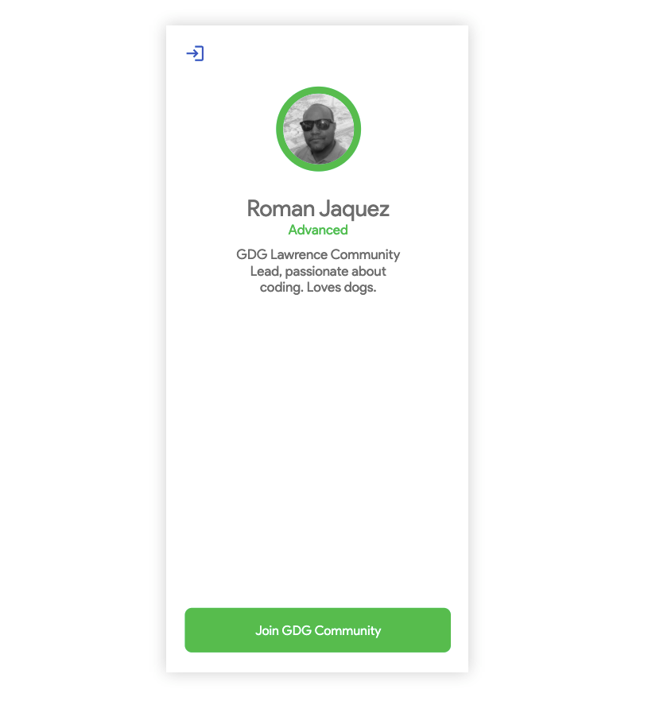
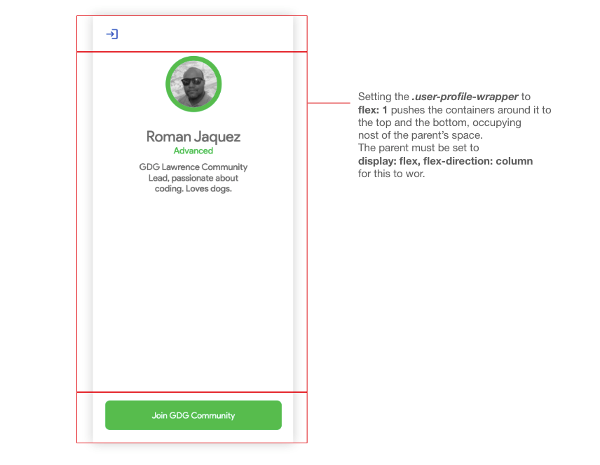
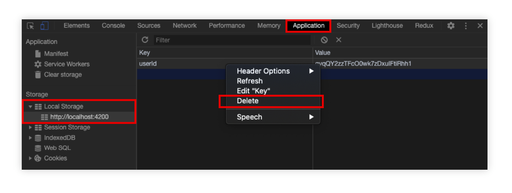

This codelab provides the tutorial on how to create profile page for registered users in the the GDG Community project.
At the end of this lab, you will have a form page that looks like the following:

Let's create the page that will display the user profile that we are pushign to Firebase via the form we created in the previous codelab.
Let's start by creating the component and its route. At the root of the application folder, in Visual Studio Code command line, execute the following command:
ng generate component user-profile
Out of the generated files, let's navigate to the user-profile.component.ts file and add tsoem logic to it. Add the encapsulation: ViewEncapsulation.None to the component decorator section:
...
@Component({
selector: 'app-user-profile',
templateUrl: './user-profile.component.html',
styleUrls: ['./user-profile.component.less'],
encapsulation: ViewEncapsulation.None
})
...
Inside the UserProfileComponent body, at the top of the class, let's add two properties to hold the user information data and the subscription to receive this same data.
...
userInfo: MemberData;
userSub: Subscription;
...
In the constructor, let's inject the necessary services to fulfill the needs of this component as far as data and navigation needs is concerned:
...
constructor(
private authService: AuthenticationService,
private userService: UserService,
private router: Router
) { }
...
Add the OnInit and ***OnDestroyimplemention to the class:
...
export class UserProfileComponent implements OnInit, OnDestroy {
...
In the ngOnInit, let's call the getUser() method from the AuthenticationService, and subscribe to it in order to receive the user information. Also hold on the subscription reference of this method in the userSub property so we can clean it up later.
Then, inside the subscription body, check whether the user is available, and if so, fetch the user profile from the UserService's getUser() method, passing the logged in user's uid, and also hooking up to the Promise it returns by handling the .then() callback.
In the Promise's resolving callback, fetch the Firebase document we're fetching associated to the user id we passed, and hold on to this reference in the userInfo property by calling the doc.data() method and casting it to a type of MemberData datatype. doc is a reference to a Firebase document, and the way to unwrap it or extract the data is by calling its .data() method:
...
ngOnInit(): void {
this.userSub = this.authService.getUser().subscribe((user: User) => {
if (user) {
this.userService.getUser(user.uid).then((doc) => {
this.userInfo = doc.data() as MemberData;
});
}
});
}
...
Now, implement the ngOnDestroy() method and make sure to clean up the subscription:
...
ngOnDestroy(): void {
this.userSub.unsubscribe();
}
...
Now, add a method that will be hooked up to a button in this page that will allow the users to join the GDG Community and navigate to the community page (later in a subsequent lab). For now let's add the hook:
...
onJoinGDGCommunity() {
this.router.navigate(['/gdg-community']);
}
...
Locate the file user-profile.component.html and let's add the following markup for the page:
<div class="user-profile-page">
<app-bar [showProfile]="false"></app-bar>
<section class="user-profile-wrapper">
<div class="user-profile-panel">
<div class="img-wrapper"><img src="{{ userInfo?.photoURL }}" /></div>
<div class="user-display-name">{{ userInfo?.name }}</div>
<div class="user-expertise">{{ userInfo?.skills | titlecase }}</div>
<div class="user-description">{{ userInfo?.description }}</div>
</div>
<button (click)="onJoinGDGCommunity()" class="join-gdg common-btn">
Join GDG Community
</button>
</section>
</div>
This is a simple structure where we're wiring up the properties and methods in the user-profile.compoment.ts file before, and out of the userInfo object, we consume the photoURL, name, skills and description.
Notice what the first child of the user-profile-page div container is: yes, the app bar!! Since this is a reusable component, we can use it anywhere! Here we are displaying at the top of the page, and passing some of the optional inputs we created. This case we are passing the flag whether we'd like to show the profile icon. Since we are already in the profile page, there's no need to have an icon to navigate to itself, hence the passing of false. Default is true.
...
<app-bar [showProfile]="false"></app-bar>
...
Let's locate the user-profile.component.less file and paste the following code:
@import './../../assets/styles/colors.less';
.user-profile-page {
height: 100vh;
display: flex;
flex-direction: column;
}
.user-profile-wrapper {
padding: 32px;
flex: 1;
display: flex;
flex-direction: column;
.user-profile-panel {
flex: 1;
display: flex;
flex-direction: column;
align-items: center;
text-align: center;
.img-wrapper {
width: 100px;
height: 100px;
border: 10px solid @color_profile;
border-radius: 50%;
img {
max-width: 100%;
border-radius: 50%;
}
}
.user-display-name {
color: grey;
font-size: 2em;
margin-top: 32px;
}
.user-expertise {
color: @color_profile;
font-size: 1.2em;
}
.user-description {
margin-top: 12px;
color: grey;
font-size: 1.2em;
width: 250px;
}
}
.join-gdg {
background: @color_profile;
}
}
As far as the structure goes, we've done the same thing as in other pages when it comes to responsive design strategies. In the .user-profile-page outer container, we've set it to be 100% of the browser's viewport (height: 100vh) and placing the child elements in a column fashion.
We made one of the child containers (.user-profile-wrapper) occupy 1 fractional percentage of the whole screen (flex: 1) while pushing all other elements around it (above and below)

Now, let's take this page for a spin - from beginning to end of the registration workflow.
In order to see the Profile Page, you either have to come in fresh after a registration, but if you have registered already, you won't see the Form Registration Page. Fortunately, there's a hack you can implement to see it and then navigate to the Profile page. For that, please try the following:

This page is ready to go! The next codelab will focus on joining the GDG Community Page, sending your information to the GDG Community Member List and sending your logged-in status so other members can see when you're logged in in real-time.